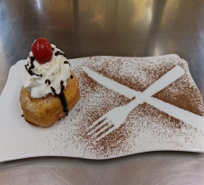

← Volver al módulo 3

Armado de Helado Frito
Delicioso helado frito envuelto en pan molde, cubierto con rebosado y decorado con chispas, azúcar impalpable y frutas.
Ingredientes
- Helado previamente congelado
- 1 paquete de pan molde
- Papel film
- Leche c/n
- 2 tazas de harina
- 1 taza de leche
- 2 huevos
- Aceite c/n
- 100 ml de crema de leche
- 1 cucharada de azúcar
- Azúcar impalpable c/n
- Chispitas de chocolate
- Cherrys
Preparación
Realizar el mise en place.
-
Cortar los bordes del pan molde y formar bolitas de helado. Envolver cada bolita con pan remojado en leche, haciendo presión, y forrar con papel film.
-
Llevar a congelación durante toda la noche.
-
Preparar el rebosado: batir huevos con azúcar y aceite, intercalando con harina y leche hasta obtener una masa semi líquida.
-
Sumergir las bolitas congeladas en el rebosado y freír en aceite precalentado hasta dorar.
-
Emplatar y decorar al gusto con azúcar impalpable, chispas de chocolate y cherrys.